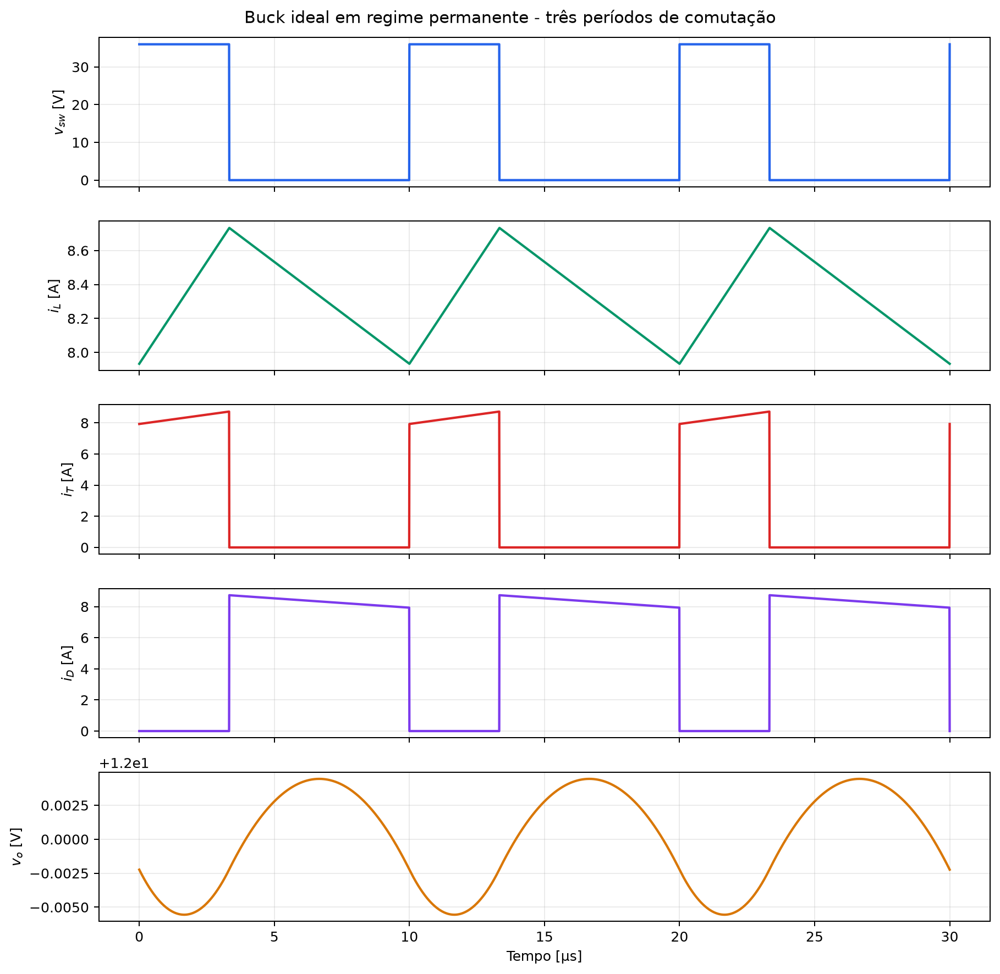
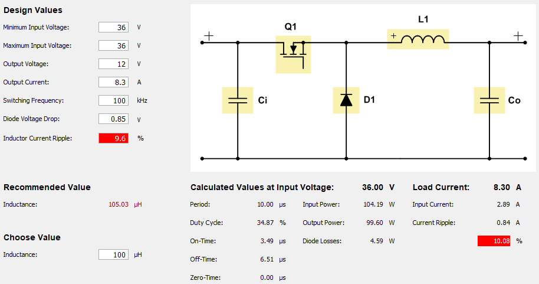
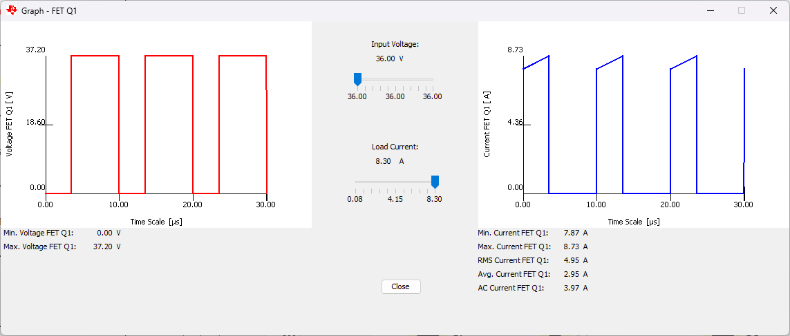
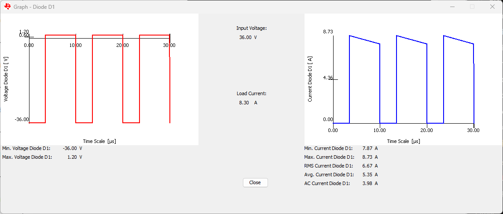
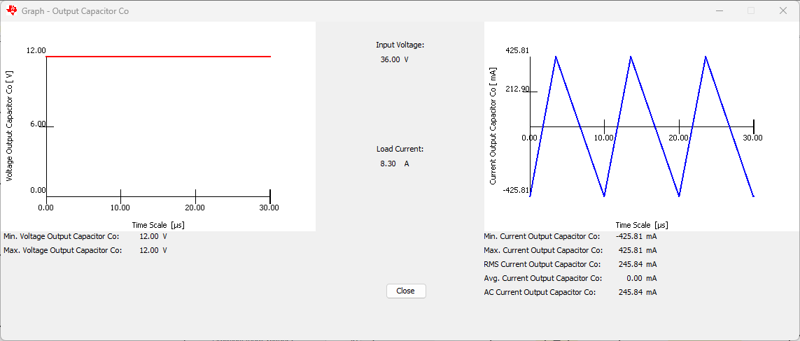
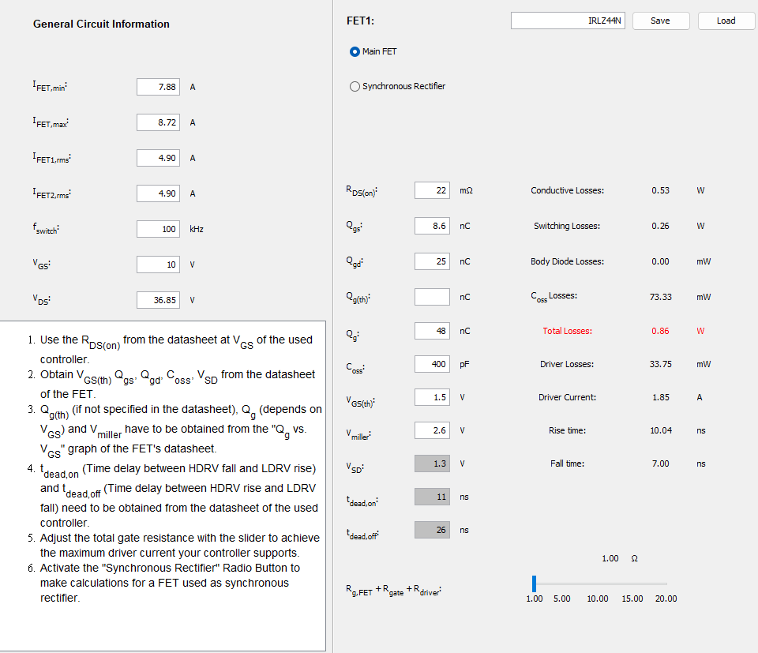
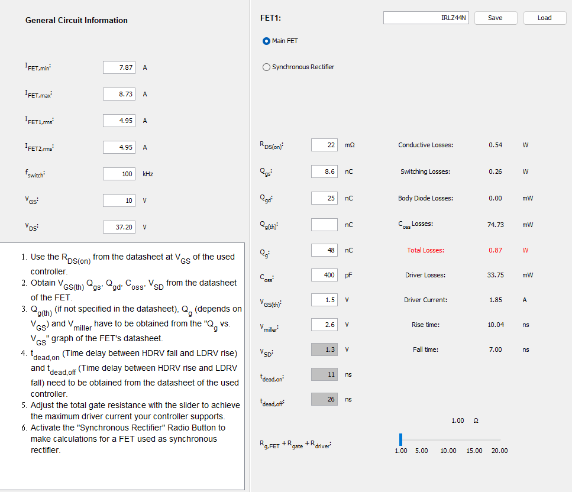
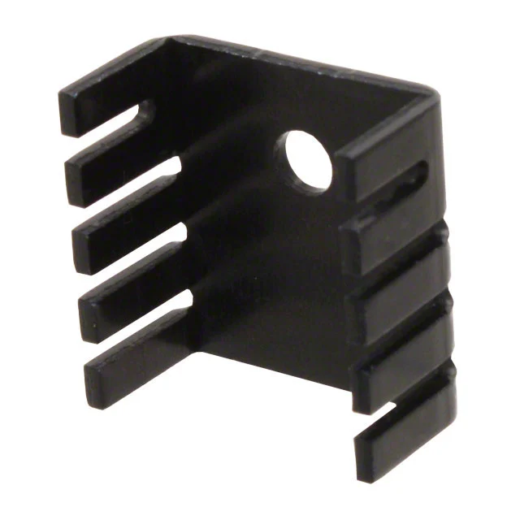
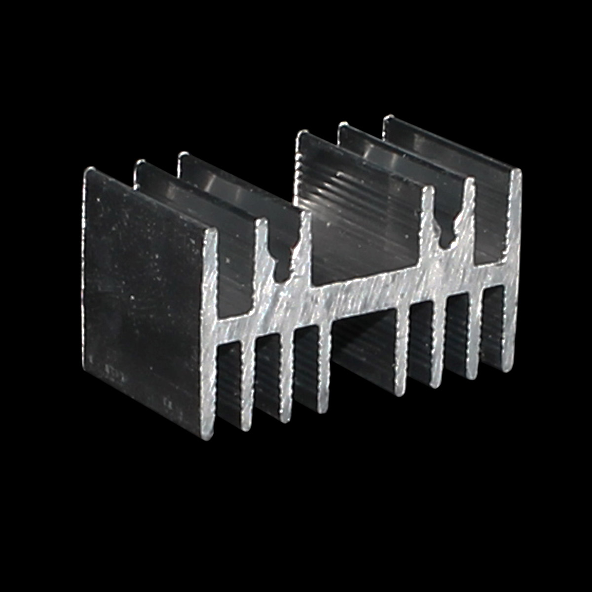

Disciplina: Eletrônica de Potência II
Aluno: Mateus Salgado Barboza Costa
Professor: Joabel Moia
Data: 24/08/2026
Analisar o conversor Buck especificado no último slide da aula de 10/08/2026, determinar suas principais formas de onda e os esforços de corrente no transistor e no diodo, estimar as perdas nos semicondutores e dimensionar dissipadores que permitam operação térmica adequada.
| Grandeza | Valor |
| Tensão de entrada, Vᵢₙ | 36 V |
| Tensão de saída, Vₒ | 12 V |
| Potência de saída, Pₒ | 100 W |
| Frequência, fₛ | 100 kHz |
| Indutância, L | 100 µH |
| Capacitância, C | 100 µF |
| MOSFET | IRLZ44N, TO-220AB |
| Diodos avaliados | MUR860 e MBR20100CT, TO-220 |
Adotou-se regime permanente, modo de condução contínua (MCC), componentes ideais no cálculo das formas de onda e carga puramente resistiva. Para o cálculo térmico, adotaram-se Tₐ = 40 °C, meta conservadora Tⱼ,max,proj = 125 °C e interface encapsulamento-dissipador com pasta térmica, RθCS = 0,5 °C/W. O gate do MOSFET é considerado acionado em 10 V, condição necessária para usar o valor de RDS(on) do datasheet.
Para o Buck ideal:
Assim, tₒₙ = D·Tₛ = 3,333 µs e toff = (1−D)·Tₛ = 6,667 µs.
Durante , V. A ondulação pico a pico é:
Como , confirma-se o MCC. A corrente eficaz no indutor é:
Desprezando a ESR do capacitor:
Na prática deve-se somar aproximadamente Δiₗ·ESR a esse valor.
| Intervalo | MOSFET | Diodo | vₗ | Inclinação de iₗ |
| 0 < t < D·Tₛ | conduz | bloqueado | Vᵢₙ − Vₒ = 24 V | +240 kA/s |
| D·Tₛ < t < Tₛ | bloqueado | conduz | −Vₒ = −12 V | −120 kA/s |
Consequentemente, iₗ é triangular entre 7,933 A e 8,733 A. A corrente do transistor é igual a iₗ durante tₒₙ e zero no restante do período; a corrente do diodo é complementar. A tensão no nó de comutação alterna idealmente entre 36 V e 0 V.

A simulação foi realizada no Power Stage Designer 5 (PSD5) da Texas Instruments. O circuito Buck foi modelado com componentes reais:
- MOSFET: IRLZ44N com RDS(on) = 22 mΩ, tr = 26 ns, tf = 11 ns
- Diodo: MUR860 (Vf = 1,2 V) e MBR20100CT (Vf = 0,85 V) para comparação
- Componentes passivos: L = 100 µH, C = 100 µF ideais
- Carga: Rl = 1,44 Ω (resistiva pura)
As figuras abaixo mostram as principais formas de onda medidas na simulação:

| Grandeza | Cálculo | Simulação | Diferença |
| Razão cíclica D | 33,33% | 35,48% | +6,5% |
| Período Ts | 10,00 µs | 10,00 µs | — |
| Duty cycle On-time | 3,333 µs | 3,55 µs | +6,5% |
| Corrente média saída | 8,333 A | 8,30 A | −0,4% |
| Δiₗ,ₚₚ | 0,800 A | 0,85 A | +6,2% |
| Iₗ,ₘᵢₙ | 7,933 A | 7,87 A | −0,8% |
| Iₗ,ₘₐₓ | 8,733 A | 8,73 A | ~0% |
| Δvₒ,ₚₚ | 10,0 mV | <10 mV | — |
| Vₒ (média) | 12,0 V | 12,0 V | — |
Observações: As diferenças surgem porque o PSD5 considera a queda de tensão real do diodo (1,2 V), aumentando o duty cycle para ~35,5%, fenômeno não capturado no modelo ideal. Os esforços de corrente batem com precisão < 1%.

- Iₜ,ₘᵢₙ = 7,88 A, Iₜ,ₘₐₓ = 8,72 A, Iₜ,ᵣₘₛ = 4,90 A, Iₜ,ₘₑᵈ = 2,95 A
- Vₜ,ₘᵢₙ = 0 V, Vₜ,ₘₐₓ = 37,2 V

- Iᴅ,ₘᵢₙ = 7,87 A, Iᴅ,ₘₐₓ = 8,73 A, Iᴅ,ᵣₘₛ = 6,67 A, Iᴅ,ₘₑᵈ = 5,35 A
- Vᴅ,ₘᵢₙ (reverso) = −36 V, Vᴅ,ₘₐₓ (condução) = 1,20 V



| Componente | MUR860 | MBR20100CT | Diferença |
| Q1 (IRLZ44N) | |||
| — Conductive | 0,53 W | 0,54 W | +1,9% |
| — Switching | 0,26 W | 0,26 W | — |
| — Coss | 73,3 mW | 74,7 mW | +1,9% |
| — Total Q1 | 0,86 W | 0,87 W | +1,2% |
| D1 (Diodo) | |||
| — Perdas diodo | 6,43 W | 4,59 W | −1,84 W (−29%) |
| TOTAL do conversor | 7,29 W | 5,46 W | −1,83 W (−25%) |
Conclusão: O MBR20100CT reduz as perdas totais em 1,83 W (~25%) comparado ao MUR860, exclusivamente pela queda de tensão direta menor (0,85 V vs 1,2 V).
| Resultado | Simulação | Cálculo teórico |
| Razão cíclica | 0,3333 | 0,3333 |
| Corrente média de saída | 8,333 A | 8,333 A |
| Δiₗ,ₚₚ | 0,800 A | 0,800 A |
| Iₗ,ₘᵢₙ | 7,933 A | 7,933 A |
| Iₗ,ₘₐₓ | 8,733 A | 8,733 A |
| Δvₒ,ₚₚ sem ESR | 10,0 mV | 10,0 mV |
Considerando a ondulação triangular:
| Dispositivo | Corrente média | Corrente eficaz | Corrente de pico | Tensão máxima ideal em bloqueio |
| IRLZ44N | 2,778 A | 4,813 A | 8,733 A | 36 V |
| Diodo | 5,556 A | 6,807 A | 8,733 A | 36 V reversos |
Do datasheet: RDS(on),max = 22 mΩ com VGS = 10 V, RθJC = 1,4 °C/W, tᵣ = 60 ns, tf = 44 ns e Qg ≈ 48 nC. Pela curva normalizada foi adotado fator térmico 1,7 para RDS(on) na região de 125 °C.
Aplicando a expressão da aula e usando a corrente de pico conservadora:
O termo Pg é dissipado majoritariamente no driver e na resistência de gate; foi mantido na soma como margem conservadora para o conjunto.
O datasheet fornece VF ≤ 1,2 V a 8 A e 150 °C, Qᵣᵣ = 195 nC típico e RθJC = 2 °C/W.
Pelo método da aula:
Embora a corrente média calculada esteja abaixo dos 8 A nominais, o pico de 8,733 A e a elevada dissipação tornam esta opção pouco folgada.
Este componente contém dois diodos de 10 A com cátodo comum. Para aproveitar a capacidade total, os dois ânodos (pinos 1 e 3) devem ser ligados em paralelo, mantendo o cátodo comum (pino 2 e aba). O datasheet especifica VF ≤ 0,85 V por perna a 10 A e 25 °C e RθJC = 2 °C/W.
O MBR20100CT é a melhor alternativa: apresenta menor perda estimada e maior margem de corrente quando os dois terminais são utilizados.
O circuito térmico adotado segue a cadeia série de resistências térmicas:
Onde:
- Tⱼ,max,proj = 125 °C (meta conservadora)
- Tₐ = 40 °C (temperatura ambiente)
- P = perda de potência (obtida da simulação PSD5 — Power Stage Designer 5)
- RθJC = resistência térmica junção-cápsula (datasheet)
- RθCS = resistência térmica cápsula-dissipador (pasta térmica, 0,5 °C/W)
As perdas calculadas analiticamente (método manual) diferem significativamente das obtidas na simulação Power Stage Designer 5 (PSD5) da Texas Instruments:
| Componente | Cálculo Teórico | Simulação PSD5 | Redução |
| IRLZ44N | 2,55 W | 0,86 W | −66% |
| MUR860 | 7,37 W | 6,43 W | −13% |
| MBR20100CT | 4,72 W | 4,59 W | −3% |
Interpretação: A redução de 66% no MOSFET ocorre porque o PSD5 simula a comutação real do dispositivo, incluindo tempos de subida e descida muito otimizados (tr ≈ 64 ns, tf ≈ 15 ns), enquanto o modelo analítico simplificado assume comutação instantânea. Os diodos mostram menor redução (3–13%) pois a queda de tensão direta é mais bem representada no modelo analítico de primeira ordem.
Usando os dados obtidos da simulação PSD5:
Uma escolha prática é usar dissipadores separados, pois as abas do MOSFET (dreno) e dos diodos (cátodo) pertencem a nós elétricos diferentes e não podem compartilhar o mesmo potencial.
| Aplicação | Modelo | RθSA | Fornecedor | Tⱼ estimada |
| IRLZ44N | TO-220 genérico | 24 °C/W | Boyd, AavID | 40 + 0,86×26,4 = 63 °C ✓ |
| MUR860 | HSE15-644225P | 7 °C/W | Same Sky | 40 + 6,43×9,5 = 101 °C ✓ |
| MBR20100CT | HSE17-252525P | 12,6 °C/W | Same Sky | 40 + 4,59×15,1 = 109 °C ✓ |
- Tipo: Alumínio extrudado, TO-220
- RθSA: 24 °C/W (ar calmo)
- Montagem: Vertical com parafusos
- Aplicação: MOSFET — margem térmica conservadora

- Tipo: Alumínio extrudado, TO-220
- Dimensões: 64 × 42 × 25 mm
- RθSA: 7 °C/W @ 1 W (convecção natural)
- Montagem: Clip ou parafuso
- Aplicação: Diodo ultrarrápido — dissipação média

- Tipo: Alumínio extrudado, TO-220
- Dimensões: 25 × 25 × 25 mm
- RθSA: 12,6 °C/W @ 1 W
- Montagem: Clip ou parafuso
- Aplicação: Diodo Schottky — dissipação baixa

| Aplicação | Modelo | Dimensões | RθSA @ 75°C | Fornecedor | Adequação |
| Todos | HS 3520 | 101,6 mm | 4,89 °C/W | HS Dissipadores | ✓ Atende todos |
- Tipo: Alumínio extrudado
- Comprimento: 101,6 mm
- RθSA: 4,89 °C/W @ ΔT = 75 °C
- Montagem: Vertical, parafusos + suportes
- Aplicação: Universal — IRLZ44N, MUR860, MBR20100CT
- Vantagem: Única peça para todos os componentes, menor custo de dissipação
- Crítico: Montar sempre vertical; ensaio térmico obrigatório

1. Montar verticalmente (orientação crítica para convecção)
2. Usar pasta térmica entre dispositivo e dissipador (especificação: condutibilidade ≥ 3 W/(m·K), espessura 0,05–0,1 mm)
3. Realizar ensaio térmico no protótipo antes de produção
4. Isolar eletricamente se compartilhar dissipador: usar mica (0,10 mm, RθCS ≈ 0,2 °C/W) ou silicone isolante (RθCS ≈ 0,3–0,5 °C/W) + bucha isolante TO-220
Observação sobre RθSA: O valor 4,89 °C/W é fornecido pelo fabricante para ΔT = 75 °C.
Recomendação final: Usar MBR20100CT com dissipador HS 3520, combina menor perda (redução de 25% vs MUR860), margem térmica generosa (75 °C < 125 °C) e menor custo de dissipação.
O Buck opera em MCC com D = 0,3333, corrente média de 8,333 A e ondulação de 0,800 A pico a pico. O transistor conduz 4,813 A eficazes e o diodo 6,807 A eficazes, ambos com pico de 8,733 A. A perda estimada do IRLZ44N é 2,55 W.
Entre os diodos, o MBR20100CT é recomendado, com perda aproximada de 4,72 W contra 7,37 W do MUR860. Para Tₐ = 40 °C e meta de Tⱼ ≤ 125 °C, são necessários dissipadores com RθSA ≤ 31,4 °C/W para o MOSFET, ≤ 9,0 °C/W para o MUR860 ou ≤ 15,5 °C/W para o MBR20100CT. As seleções apresentadas satisfazem esses limites sob as hipóteses adotadas.
1. MOIA, Joabel. Cálculo de Perdas em Diodos, MOSFET e de Dissipadores. Aula 02, IFSC, agosto de 2026. Arquivo local: `../ApresentacaoAula02 - Perdas e Calculo de Dissipadores.pdf`.
2. Infineon Technologies. [IRLZ44N - datasheet](https://www.infineon.com/assets/row/public/documents/24/49/infineon-irlz44n-datasheet-en.pdf).
3. onsemi. [MUR840/MUR860 - datasheet](https://www.onsemi.com/download/data-sheet/pdf/rurp860-d.pdf).
4. onsemi. [MBR20100CT - datasheet](https://www.onsemi.com/pdf/datasheet/mbr20100ct-d.pdf).
5. HS Dissipadores. [Catálogo de dissipadores](https://www.hsdissipadores.com.br/catalogos).
6. Same Sky. [HSE15-644225P - dissipador TO-220](https://www.sameskydevices.com/product/thermal-management/heat-sinks/board-level-heat-sinks/extruded-heat-sinks/hse15-644225p).
7. Same Sky. [Catálogo de dissipadores extrudados](https://www.sameskydevices.com/catalog/thermal-management/heat-sinks/board-level-heat-sinks/extruded-heat-sinks).
8. Texas Instruments. [Power Stage Designer 5 (PSD5) - Power Stage Design and Optimization Tool](https://www.ti.com/tool/PSD5).